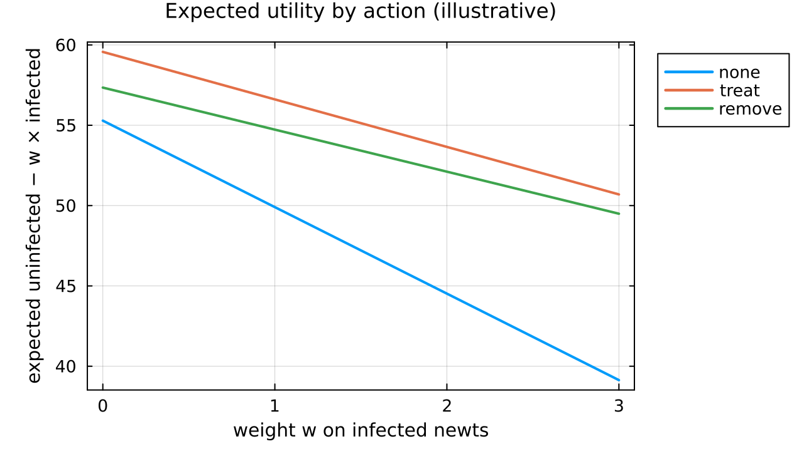

Sample beliefs and outcome tables
Simon Frost
- Motivation
- The problem
- The model and the four adapter verbs
- A sample belief
- An outcome table
- Utilities counted in animals
- The decision
- Value of information from a sample
- The report
- What to take away
- Next
Motivation
The first ten vignettes worked with a handful of named states and exact probabilities. Most models are not like that. Their uncertain parameters are continuous, a belief about them is a set of draws (from a posterior, or from an elicited prior), and the model is a simulator that returns a different outcome each time it is run.
This vignette takes a decision problem from a simulator to a decision in four steps:
- a
SampleBelief: draws of named parameters, with weights; - an
OutcomeTable: what the model produced for every draw, action and replicate; - a utility counted in animals, which turns outcomes into a
PayoffTablewhose Monte Carlo standard errors are kept in a separate field; - the rules and the value of information of the earlier vignettes, now as estimates, each reported with its standard error.
All numbers are illustrative. The model is a toy, and its parameter values are not estimates for any real species or site.
The problem
A fungal skin disease has reached a pond of newts. One infected animal has been found. The manager can mount one intervention, in week 3, or none:
none: no intervention, the baseline;treat: catch 70% of the newts and bathe them in an antifungal. An infected newt is cured; handling kills 8% of the animals caught;remove: catch 70% of the newts and remove those that test positive: every infected newt caught and, through false positives, 12% of the uninfected ones.
Three things are uncertain: the weekly transmission rate (contact), the number of newts in the pond (newts), and whether the pond is open or shaded (habitat; warm water in an open pond clears infections faster).
The model and the four adapter verbs
DecisionAnalysis.jl never looks inside a model. It reaches it through four verbs, which a model package (or, here, a script) gives methods for:
| verb | meaning |
|---|---|
with_parameters(prob, θ) | the problem with its uncertain parameters set to one draw |
apply_action(prob, a) | the problem under an intervention |
simulate(prob; rng) | one run, with every random number taken from rng |
outcome(solution) | the named outcomes of the run, as counts |
The toy model is in vignettes/_toy_pond.jl, shared with the next two vignettes:
using DecisionAnalysis
using Random: Xoshiro
include(joinpath("..", "_common.jl"))
include(joinpath("..", "_toy_pond.jl"))
println("```julia\n", read(joinpath("..", "_toy_pond.jl"), String), "```")# A toy stochastic model of a fungal disease in a pond of newts, used by the
# sample-based vignettes. All numbers are illustrative. The model is reached by
# DecisionAnalysis through four adapter verbs only.
using DecisionAnalysis
using Random: AbstractRNG
"""
A pond: `newts` animals, one of them infected at the start; `contact` is the weekly
transmission rate, `open` says whether the pond is unshaded (warm water clears
infections faster), and `action` is the management applied in week 3.
"""
Base.@kwdef struct ToyPond
newts::Int = 60
contact::Float64 = 0.5
open::Bool = false
action::Symbol = :none
weeks::Int = 12
end
# Uncertain parameters come from one row of the draws.
function DecisionAnalysis.with_parameters(pond::ToyPond, θ)
return ToyPond(; newts=θ.newts, contact=θ.contact, open=θ.habitat == "open",
action=pond.action, weeks=pond.weeks)
end
# An action is an intervention in week 3:
# :none no intervention (the baseline);
# :treat catch 70% of the newts and bathe them in antifungal: an infected newt is
# cured, and handling kills 8% of the newts caught;
# :remove catch 70% of the newts and remove those that test positive: every
# infected newt caught, and 12% of the uninfected ones (false positives).
function DecisionAnalysis.apply_action(pond::ToyPond, action::Symbol)
action in (:none, :treat, :remove) || throw(ArgumentError("unknown action $action"))
return ToyPond(; newts=pond.newts, contact=pond.contact, open=pond.open, action,
weeks=pond.weeks)
end
binomial(rng::AbstractRNG, n::Integer, p::Real) = count(_ -> rand(rng) < p, 1:n)
# One run: a chain-binomial epidemic in weekly steps. Every random number comes from
# `rng`, so two actions run with the same generator see the same epidemic until week 3.
function DecisionAnalysis.simulate(pond::ToyPond; rng::AbstractRNG)
S, I = pond.newts - 1, 1
handled = 0
for week in 1:(pond.weeks)
if week == 3 && pond.action !== :none
caught_S, caught_I = binomial(rng, S, 0.7), binomial(rng, I, 0.7)
handled = caught_S + caught_I
if pond.action === :treat
dead_S, dead_I = binomial(rng, caught_S, 0.08),
binomial(rng, caught_I, 0.08)
S += (caught_I - dead_I) - dead_S
I -= caught_I
else
S -= binomial(rng, caught_S, 0.12)
I -= caught_I
end
end
N = S + I
N == 0 && break
infections = binomial(rng, S, 1 - exp(-pond.contact * I / N))
deaths = binomial(rng, I, 0.25)
recoveries = binomial(rng, I - deaths, pond.open ? 0.35 : 0.05)
S += recoveries - infections
I += infections - deaths - recoveries
end
return (; uninfected=S, infected=I, handled)
end
# The named outcomes of a run: counts of animals, not utilities.
function DecisionAnalysis.outcome(run::NamedTuple)
return (; uninfected=run.uninfected,
infected=run.infected,
alive=run.uninfected + run.infected,
handled=run.handled)
end
"Draws of the uncertain parameters: an illustrative prior, not an estimate."
function toy_draws(rng::AbstractRNG, n::Integer)
return (; contact=exp.(log(0.45) .+ 0.7 .* randn(rng, n)), newts=rand(rng, 30:120, n),
habitat=[rand(rng) < 0.35 ? "open" : "shaded" for _ in 1:n])
end
const TOY_ACTIONS = [:none, :treat, :remove]Outcomes are counts of animals. No utility has been applied yet, and no cost appears anywhere: this package counts individuals, never money.
A sample belief
A SampleBelief is a table of draws, one row per draw and one column per named parameter, with weights. Equal weights are the default and are held exactly, as 1 // n.
draws = toy_draws(Xoshiro(11), 300)
belief = SampleBelief(draws)SampleBelief(300 draws, parameters contact, newts, habitat, effective sample size 300.0)md_table(["draw", "contact", "newts", "habitat", "weight"],
[[s, draws.contact[i], draws.newts[i], draws.habitat[i],
exact(probabilities(belief)[i])] for (i, s) in enumerate(state_labels(belief)[1:5])];
digits=3)| draw | contact | newts | habitat | weight |
|---|---|---|---|---|
s1 | 0.348 | 45 | open | 1/300 |
s2 | 0.278 | 90 | shaded | 1/300 |
s3 | 0.35 | 72 | shaded | 1/300 |
s4 | 0.283 | 92 | open | 1/300 |
s5 | 0.202 | 71 | shaded | 1/300 |
Weights need not be equal. A weighted sample has fewer effective draws than rows:
weighted = SampleBelief((; contact=[0.2, 0.5, 0.9], weight=[1, 1, 6]); weights=:weight)
(probabilities(weighted), effective_sample_size(weighted))(Rational{Int64}[1//8, 1//8, 3//4], 32//19)draw_weights returns the normalised weights of anything that holds draws, a sample belief or an outcome table:
draw_weights(weighted)3-element Vector{Rational{Int64}}:
1//8
1//8
3//4An outcome table
outcomes runs the model over draws × actions × replicates. Each draw is propagated on its own; the mean of the parameters is never plugged in.
table = outcomes(ToyPond(), TOY_ACTIONS, belief; replicates=20, seed=2026)OutcomeTable(300 draws × 3 actions × 20 replicates; outcomes uninfected, infected, alive, handled; 18000 runs ok, 0 failed, 0 absent)run_counts(table)(runs = 18000, ok = 18000, failed = 0, absent = 0)The seed is required. The run of replicate r at draw d gets a generator whose seed depends on (seed, d, r) and not on the action: these are common random numbers. Two actions in the same cell see the same epidemic up to week 3, so their difference is not blurred by luck. The achieved correlation of the simulation noise between actions says how well this worked:
alive = IndividualsUtility(:alive)
crn_correlation(table, alive)0.6391914962593434A simulator that draws from one stream in event order loses this correlation once the runs diverge. An individual-based model keeps it longer by giving every individual its own stream derived from rng.
From a table of runs
Runs made elsewhere go in directly. Any table with one row per run will do; the keywords name its columns. A run with a failing status is kept and counted, never silently dropped, and is left out of the means.
runs = [(; point=d, arm=a, rep=r, status=(d == 2 && a == "treat" && r == 3) ? "timeout" : "ok",
alive=40 + 5d + 3 * (a == "treat") + r) for d in 1:3 for a in ("none", "treat") for r in 1:4]
precomputed = OutcomeTable(runs; draw=:point, action=:arm, replicate=:rep,
outcomes=[:alive], status=:status)OutcomeTable(3 draws × 2 actions × 4 replicates; outcomes alive; 23 runs ok, 1 failed, 0 absent)failed_runs(precomputed)1-element Vector{@NamedTuple{action::Symbol, draw::Symbol, replicate::Symbol, status::String}}:
(action = :treat, draw = Symbol("2"), replicate = Symbol("3"), status = "timeout")replicate_counts gives the number of usable runs in each cell, action by draw. A payoff averages those and no others:
replicate_counts(precomputed)2×3 Matrix{Int64}:
4 4 4
4 3 4Utilities counted in animals
A utility maps the outcomes of one run to a number. Three are shown here.
IndividualsUtility(:alive): every surviving newt counts, infected or not.InfectionUtility(; weight=0): only uninfected newts count.InfectionUtility(; weight=1): uninfected minus infected. An infected survivor is set against an uninfected one, because it is a source of further infection.
Whether an infected but living animal counts towards the population is a modelling choice. It is stated here, and the weight on infected animals is swept below.
payoff_table applies the utility to every run and averages inside each cell, so a cell holds a conditional expected utility. The standard error of each cell is kept in its own field and is never folded into the payoff.
payoff = payoff_table(table, alive)
md_table(["action", "payoff at draw 1", "standard error", "payoff at draw 2", "standard error"],
[[a, Float64(payoff.Q[i, 1]), payoff.standard_errors[i, 1], Float64(payoff.Q[i, 2]),
payoff.standard_errors[i, 2]] for (i, a) in enumerate(action_labels(payoff))])| action | payoff at draw 1 | standard error | payoff at draw 2 | standard error |
|---|---|---|---|---|
none | 43.6 | 0.59 | 86.1 | 0.73 |
treat | 41.7 | 0.44 | 83.95 | 0.65 |
remove | 39.75 | 0.53 | 80.75 | 0.63 |
With one run per cell there is nothing to average. The table is then flagged, and no standard error is invented:
one_run = outcomes(ToyPond(), TOY_ACTIONS, belief; replicates=1, seed=2026)
flagged = payoff_table(one_run, alive)
(single_replicate(flagged), flagged.standard_errors === nothing)(true, true)A flagged table holds single outcomes, not conditional expectations. Every maximum taken over it is a maximum over noise, so the best reported value and the value with information are each too high.
The decision
problem = DecisionProblem(table, alive; baseline=:none)DecisionProblem(3 feasible of 3 actions × 300 states, SampleBelief)Expected utility is now an estimate. expected_utility_estimates gives it with two errors: the standard error when the draws are a random sample of the belief, and the part that comes from the simulator alone, with the draws held fixed.
md_table(["action", "expected newts alive", "standard error", "simulation only"],
[[e.action, Float64(e.value), e.standard_error, e.simulation_error]
for e in expected_utility_estimates(problem)])| action | expected newts alive | standard error | simulation only |
|---|---|---|---|
none | 60.67 | 1.63 | 0.13 |
treat | 62.52 | 1.48 | 0.13 |
remove | 59.96 | 1.44 | 0.12 |
The actions are close, and the standard errors are large beside the differences. That comparison is misleading, because the three actions were run on the same draws with the same random numbers. The right error for a difference is the error of the paired difference. payoff_table with a baseline computes the gain of each action over no intervention replicate by replicate:
gains = DecisionProblem(payoff_table(table, alive; baseline=:none), belief)
md_table(["action", "expected gain over no intervention", "standard error", "simulation only"],
[[e.action, Float64(e.value), e.standard_error, e.simulation_error]
for e in expected_utility_estimates(gains)])| action | expected gain over no intervention | standard error | simulation only |
|---|---|---|---|
none | 0 | 0 | 0 |
treat | 1.85 | 0.4 | 0.14 |
remove | -0.71 | 0.4 | 0.13 |
Treatment gains about two newts on average, and the gain is several standard errors from zero.
A different summary is how often each action is the best one. probability_optimal gives the share of the draws in which no other action pays more, with its standard error; this is what cost-effectiveness analysis plots as an acceptability curve.
md_table(["action", "probability that it is best", "standard error"],
[[o.action, Float64(o.probability), o.standard_error]
for o in probability_optimal(problem)])| action | probability that it is best | standard error |
|---|---|---|
none | 0.54 | 0.03 |
treat | 0.44 | 0.03 |
remove | 0.02 | 0.01 |
Here no intervention is the best action in more draws than treatment is, although treatment has the larger expected payoff: where it wins, it wins by more. The probability of being best says nothing about by how much.
Rules on a sample
The rules of the earlier vignettes apply unchanged. A sample is a single prior.
rules = ["expected utility" => MaxExpectedUtility(),
"CVaR, worst 20%" => DecisionRule(CVaR(0.2)),
"lower quartile" => DecisionRule(Quantile(0.25)), "maximin" => Maximin(),
"minimax regret" => MinimaxRegret()]
md_table(["rule", "first choice", "score of the choice"],
[[name, first_choice(decide(problem, rule)),
Float64(decide(problem, rule).scores[findfirst(==(first_choice(decide(problem, rule))),
action_labels(problem))])]
for (name, rule) in rules])| rule | first choice | score of the choice |
|---|---|---|
| expected utility | treat | 62.52 |
| CVaR, worst 20% | treat | 28.15 |
| lower quartile | treat | 40.8 |
| maximin | treat | 5.3 |
| minimax regret | treat | 6.7 |
The worst case over a sample is the worst draw that happened to be sampled. A larger sample can only make it worse. The result says so:
decide(problem, Maximin()).details.sample_note"The worst and best cases are taken over the draws in the sample, whatever their weights, so this score depends on which draws were sampled: a larger sample can only make the worst case worse and the best case better."Operations that have no meaning for a sample throw BeliefFormError. An unweighted mean over draws ignores their weights:
try
aggregate(Laplace(), problem)
catch err
sprint(showerror, err)
end"BeliefFormError: Laplace is not defined for a SampleBelief: an unweighted mean over the draws ignores their weights; use Expectation"The weight on infected animals
The infection utility is uninfected − w × infected. Expected utility is linear in w, so the values of w at which the choice changes are found exactly, not on a grid.
uninfected = individuals_payoff(table, :uninfected)
infected = individuals_payoff(table, :infected)
base = DecisionProblem(uninfected, belief; baseline=:none)
regions = policy_regions(base, -infected; from=0, to=3)
md_table(["from w", "to w", "best action"],
[[Float64(r.from), Float64(r.to), r.actions] for r in regions])| from w | to w | best action |
|---|---|---|
| 0 | 3 | treat |
sweep = weight_sweep(w -> DecisionProblem(table, InfectionUtility(; weight=w); baseline=:none),
0:0.25:3)
plt = Plots.plot(; xlabel="weight w on infected newts", ylabel="expected uninfected − w × infected",
title="Expected utility by action (illustrative)")
for (i, a) in enumerate(TOY_ACTIONS)
Plots.plot!(plt, [row.weight for row in sweep], [Float64(row.scores[i]) for row in sweep];
label=String(a))
end
png_figure(plt)
Value of information from a sample
evpi(problem) applies the definition to the sample. Called with a method, evpi returns the same number with its Monte Carlo error and its two selection biases beside it, never folded in.
plain = evpi(problem, SampleAverage(); noise_correlation=crn_correlation(table, alive))
regression = evpi(problem, SplineRegression())
voi_table(["EVPI, plain sample average" => plain,
"EVPI, all-parameter regression" => regression])| estimate | value | standard error | act-now bias | cell-noise bias |
|---|---|---|---|---|
| EVPI, plain sample average | 1.599 | 0.108 | 0 | 0.169 |
| EVPI, all-parameter regression | 1.493 | 0.112 | 0 | - |
Two things bias the pieces of this calculation, and both are instances of the optimiser’s curse: a maximum of estimates overstates, on average, what the chosen action is worth.
- The act-now bias is the upward bias of the best expected utility, from maximising over sample means. It belongs to the reported value of the chosen action.
- The cell-noise bias is the upward bias of the perfect-information value, from taking a maximum over noisy cells at every draw.
EVPI is the difference of two terms that are each biased upwards, so the sign of its bias is not determined in general. The regression estimate replaces the noisy cells by fitted conditional means given all the parameters, so the simulation noise is smoothed and not maximised over. It is the estimate to prefer for a stochastic simulator.
The split of each action’s variance says how much of the spread across cells is the parameters and how much is the simulator:
md_table(["action", "total variance", "simulation", "parameter", "parameter share"],
[[v.action, v.total, v.simulation, v.parameter, v.parameter_share]
for v in variance_components(problem)])| action | total variance | simulation | parameter | parameter share |
|---|---|---|---|---|
none | 800.69 | 5.42 | 795.27 | 0.99 |
treat | 653.53 | 4.83 | 648.71 | 0.99 |
remove | 621.56 | 4.55 | 617 | 0.99 |
Here almost all of the variance is between draws: twenty replicates are plenty. The EVPI is about a newt and a half per pond, small beside the sixty or so that survive. The next vignette asks which parameter that value sits in.
The report
DecisionReport works for a sample-based problem and shows the Monte Carlo standard errors beside every estimate.
DecisionReport(problem; parameters=[:contact, :habitat],
noise_correlation=crn_correlation(table, alive))DecisionReport: 3 actions × 300 states, SampleBelief Baseline (no intervention): none
Scores by rule (* marks the chosen actions)
| action | MaxExpectedUtility | Maximin | Maximax | MinimaxRegret |
|---|---|---|---|---|
none | 60.6713 | 3.7 | 118.45 * | 25.1 |
treat | 62.5245 * | 5.3 * | 112.85 | 6.7 * |
remove | 59.9613 | 4.5 | 109.25 | 10.5 |
First choice by rule
| rule | first choice | baseline |
|---|---|---|
MaxExpectedUtility | treat | [not the baseline] |
Maximin | treat | [not the baseline] |
Maximax | none | [the baseline] |
MinimaxRegret | treat | [not the baseline] |
Minimax regret depends on the menu of actions: adding or removing an action, even one that is never chosen, can change its choice.
Monte Carlo standard errors (shown beside the values, never folded into them)
| action | expected utility | standard error | simulation only | gain over baseline | standard error of gain |
|---|---|---|---|---|---|
none | 60.6713 | 1.6337 | 0.134391 | 0 | 0.0 |
treat | 62.5245 | 1.47596 | 0.126825 | 1.85317 | 0.396214 |
remove | 59.9613 | 1.43939 | 0.12322 | -0.71 | 0.400961 |
Standard error: the draws taken as a random sample of the belief. Simulation only: the simulator’s noise with the draws held fixed (- when the table has no standard errors).
Variance of the payoff across draws
| action | total | simulation | parameter | parameter share |
|---|---|---|---|---|
none | 800.691 | 5.41825 | 795.272 | 0.993233 |
treat | 653.535 | 4.82534 | 648.709 | 0.992617 |
remove | 621.557 | 4.55496 | 617.002 | 0.992672 |
Expected gain over the baseline (none)
| action | expected gain |
|---|---|
none | 0 |
treat | 1.85317 |
remove | -0.71 |
Regret profile
| action | max regret | expected regret |
|---|---|---|
none | 25.1 | 3.45183 |
treat | 6.7 | 1.59867 |
remove | 10.5 | 4.16183 |
Value of information
| estimate | value | standard error | act-now bias | cell-noise bias |
|---|---|---|---|---|
| EVPI | 1.59867 | 0.108259 | 0.0 | 0.168519 |
| EVPI, all-parameter regression | 1.49272 | 0.11212 | 0.0 | - |
| EVPPI of contact (SplineRegression) | 1.40528 | 0.112442 | 0.0 | - |
| EVPPI of habitat (Grouping) | 0.140833 | 0.180273 | 0.0 | - |
Errors and biases are beside the values, not in them. The act-now bias is the upward bias of the best reported value from maximising sample means: the chosen action is on average worth less than its score. The cell-noise bias is the upward bias of the perfect-information value from maximising noisy cells. A value of information is a difference of two such terms, so the sign of its bias is not determined.
Assumptions
- Payoffs are conditional expected utilities of each action in each state; higher is better.
- State-wise rules (maximin, maximax, Laplace, Hurwicz, minimax regret) ignore probabilities and range over the draws in the sample, whatever their weights, so their scores depend on which draws were sampled; Laplace is not shown for a sample.
- Regret is measured against the best feasible action in each state, so it changes when the set of actions changes. Minimax regret therefore depends on the menu of actions: adding or removing an action, even one that is never chosen, can change its choice.
- Tied actions are all reported; the first choice is the tied action that comes first in the payoff table.
- Expected utility, expected regret and EVPI are under the single stated prior; EVPI is the value of learning the state exactly and at no cost.
- The baseline (no intervention) is none; gains are payoffs minus the payoff of the baseline in the same state.
- The belief is a sample of 300 draws (effective sample size 300.0): expected utility, regret and every value of information are estimates. Standard errors are shown beside them and are not folded into any value; they treat the draws as a random sample of the belief.
- The all-parameter regression estimate of EVPI replaces the noisy cells by fitted conditional means, so simulation noise is smoothed and not maximised over; it is the estimate to prefer when cells are noisy.
- Selection bias (the optimiser’s curse) is reported, not removed. It belongs to the best reported value and the chosen action: a maximum of estimates overstates, on average, what the chosen action is worth. The act-now value and the value with perfect information are each biased upwards (by sampled draws and by noisy cells); EVPI is their difference, so the sign of its bias is not determined in general. With exact payoffs and sampled draws, the plain EVPI is biased downwards.
What to take away
- A
SampleBeliefholds draws of named parameters with weights. It is a single prior, and everything computed from it is an estimate. - An
OutcomeTableholds outcomes by draw × action × replicate. Build it withoutcomesfrom a model that implements the four adapter verbs, or from any table of runs. Failed runs are kept and counted. outcomesuses common random numbers across actions;crn_correlationreports what they achieved.payoff_table(outcomes, utility)gives conditional expected utilities, with standard errors and replicate counts in separate fields. One run per cell is flagged.- For a difference between actions use
payoff_table(...; baseline): its errors are those of the paired differences. evpi(problem, method)returns aVOIEstimate: value, standard error, and the two selection biases. With noisy cells, prefer the all-parameter regression.- Selection bias belongs to the best reported value and the chosen action. The sign of the bias of EVPI is not determined.
Next
EVPPI from a sample asks which of the three uncertain parameters is worth learning, and compares the methods for estimating that.